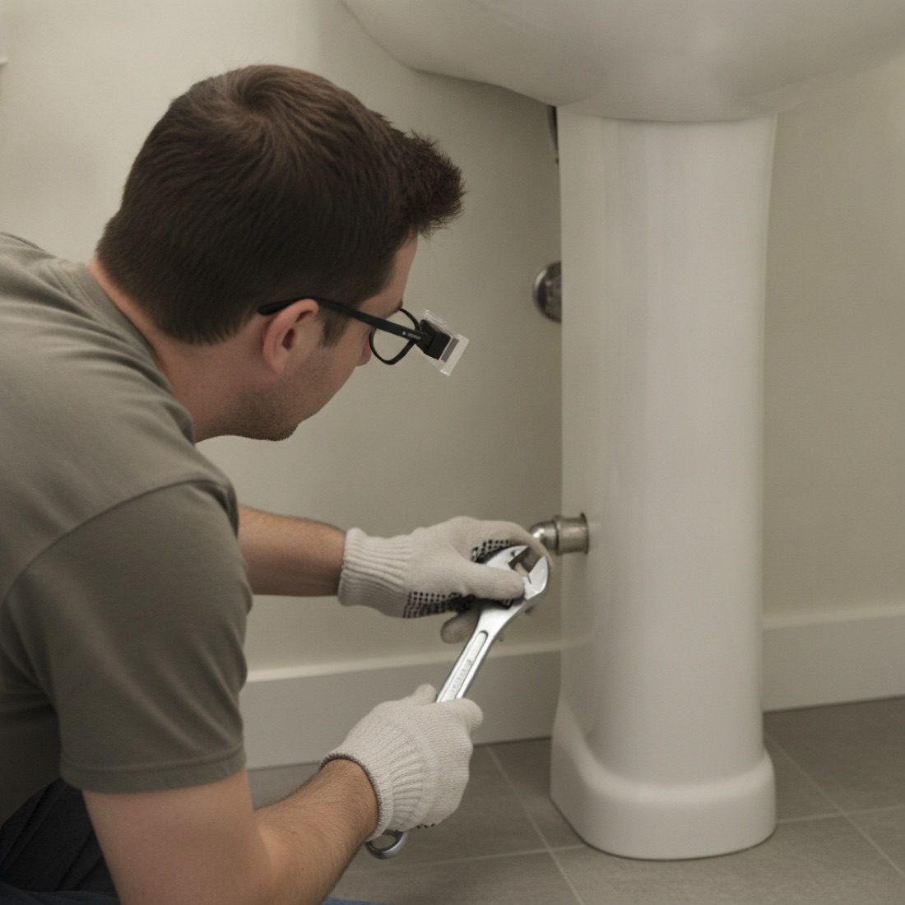
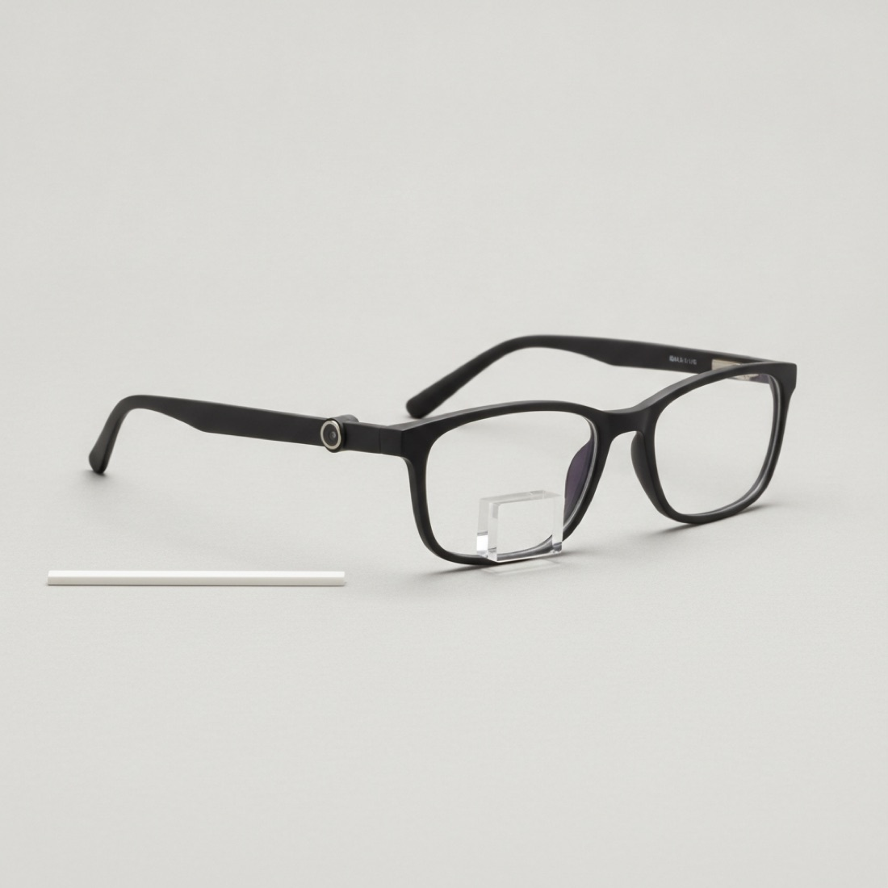
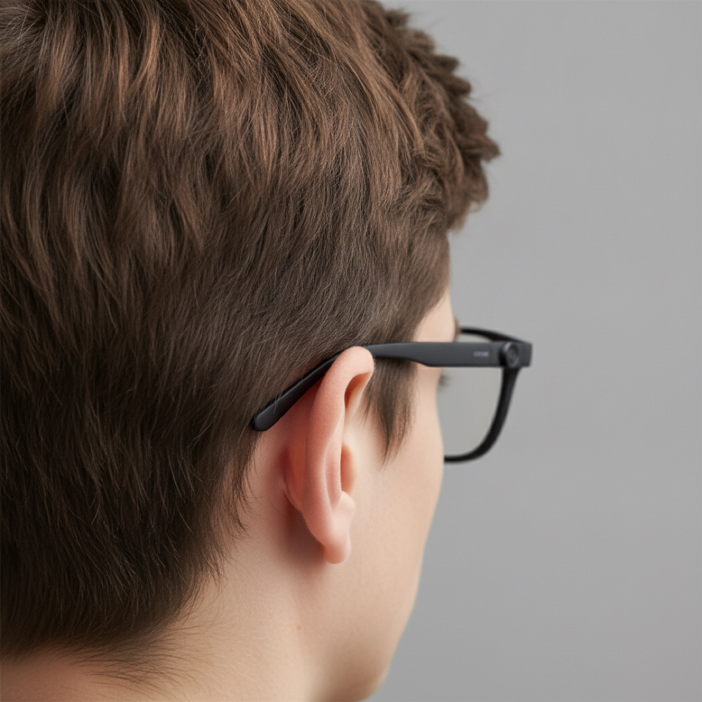
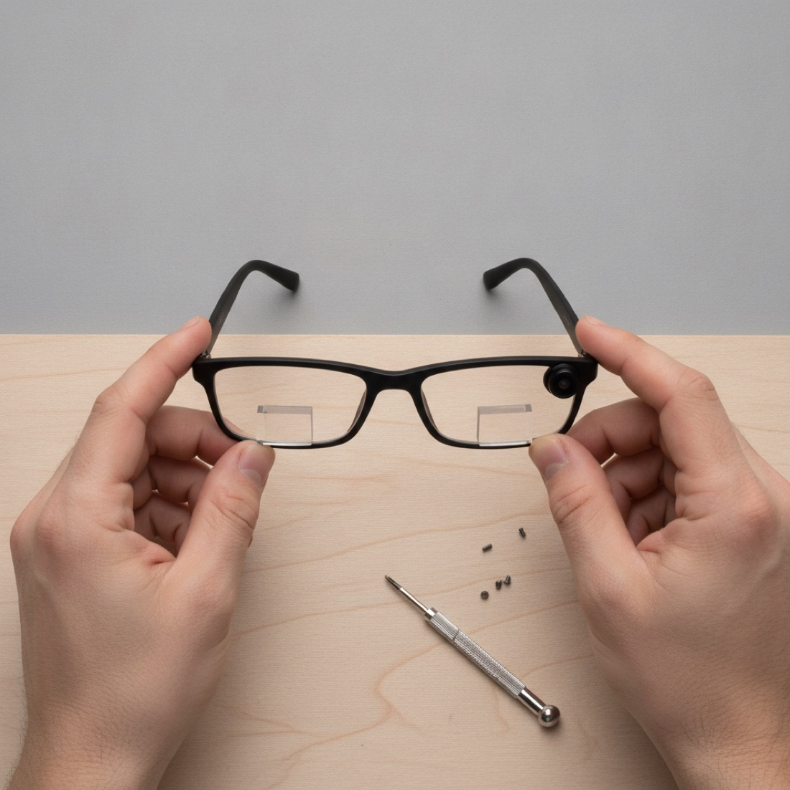
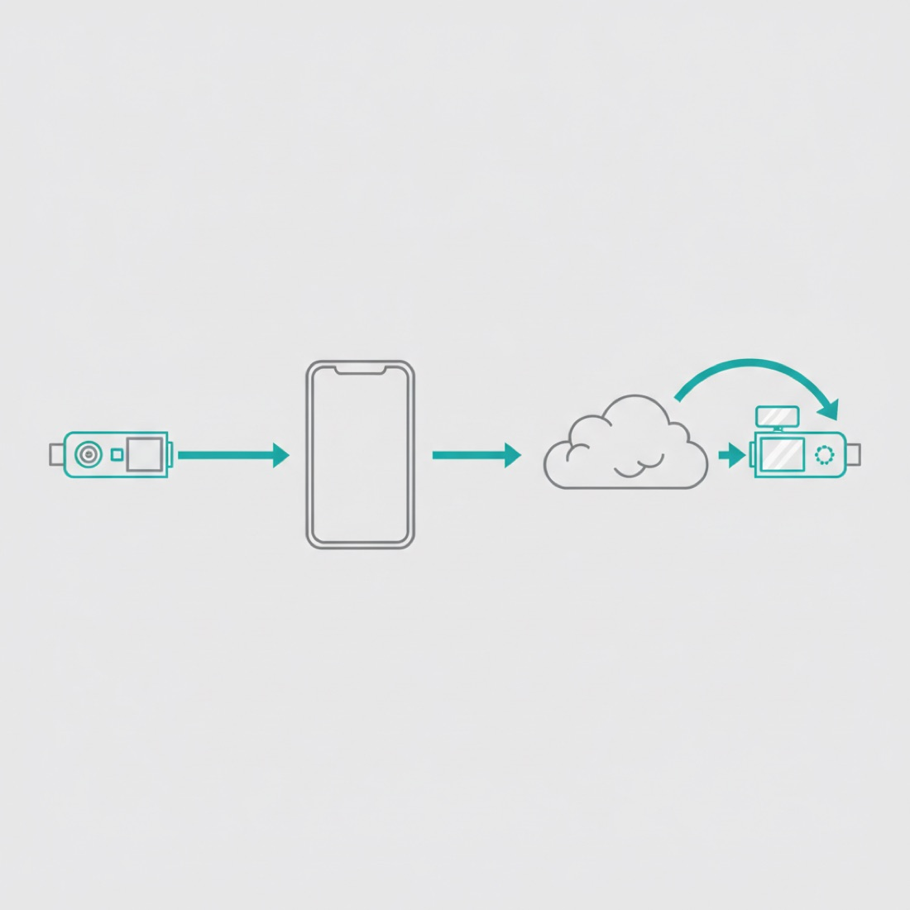
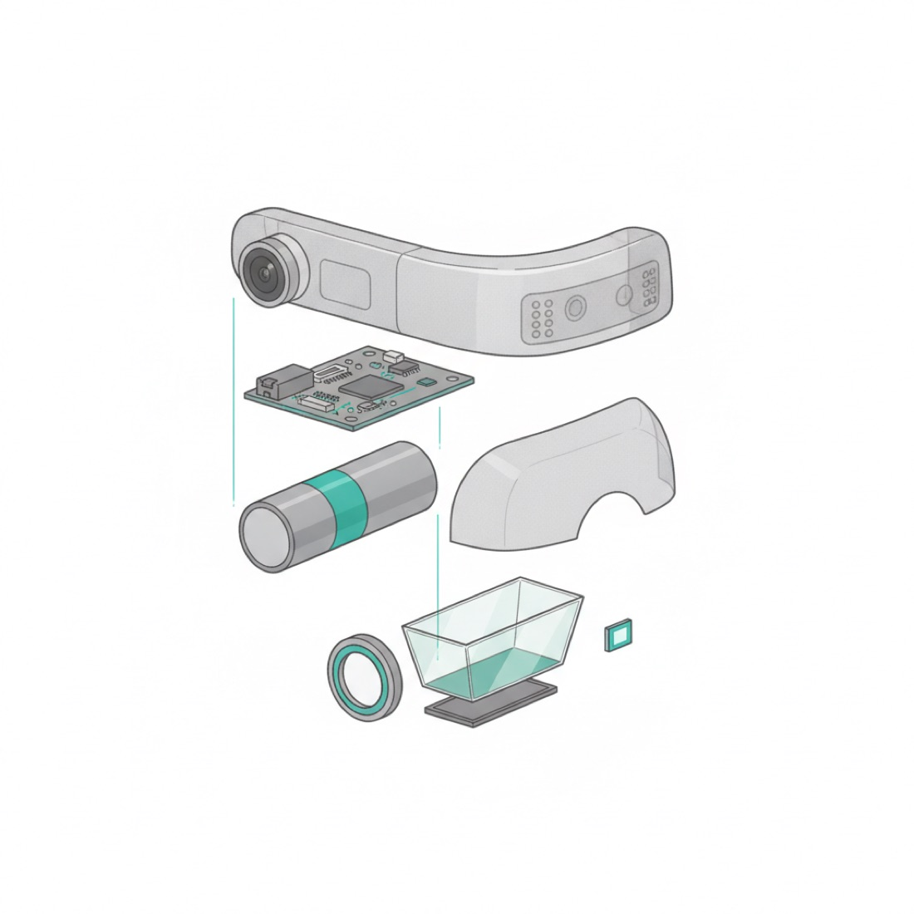
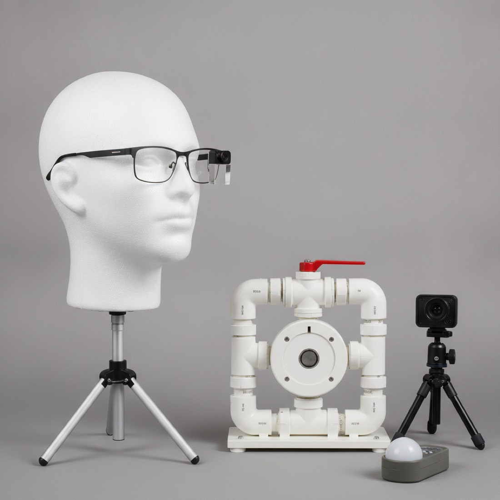
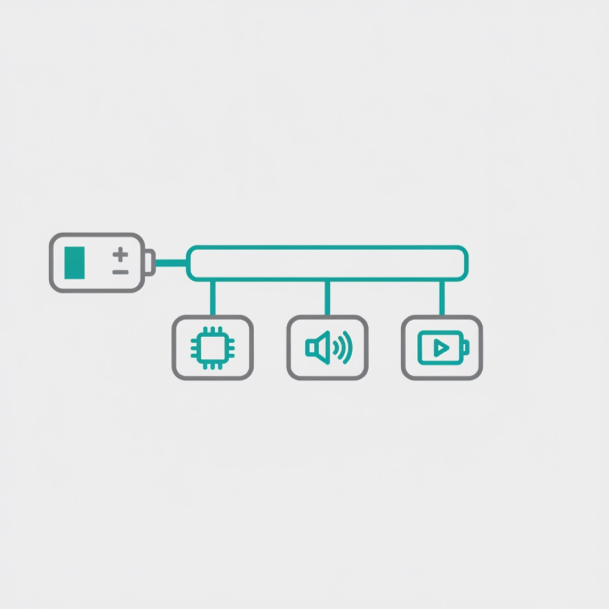

Glasses that talk you through a home repair. Look at the problem, press a button, and get the next step on a small display and in your ear.
Prices and figures are approximate. Electrical, gas and structural jobs are refused by design.

Hero: sink-trap fix with one 8-word step in view

The build: about 55 g, camera at the hinge

Fitted: cell and board in the right temple

Setup: one prism module, one small screwdriver

Signal path: photo to phone to cloud, card back in about 4 s

Inside: shell, cell, board, speaker, cover, 3-part optics

Bench check: 240 fps camera, 30 button presses timed

Power: one 500 mAh cell, three loads, about 3.3 h
Need acceptance numbers, a labelled wiring diagram and a parts table? See the full engineering version.